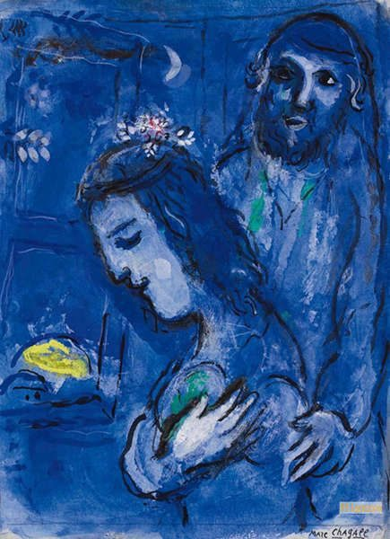
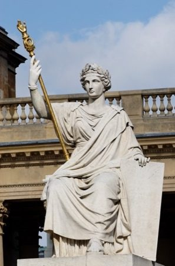
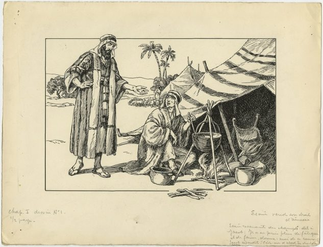
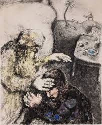
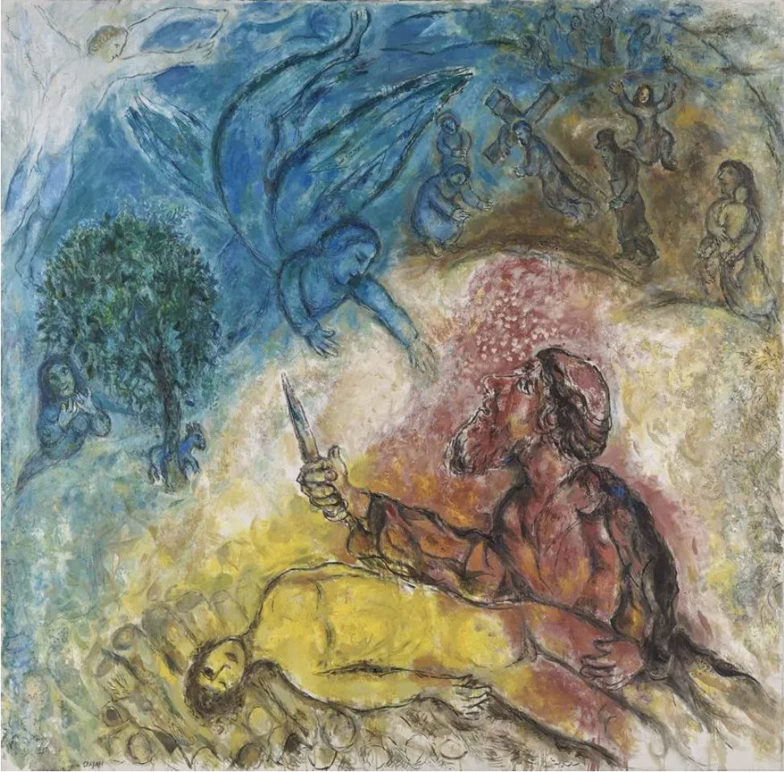
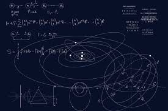

Vay’era 5786
L’apparition du rire
Its’hak l’incarnation de la rigueur
L’histoire humaine commence à s’élever et à s’intégrer dans le projet divin.
La première mitsva donnée à l’homme, la circoncision, institue une alliance, un lien indéfectible entre le Créateur et la créature. Par elle, l’homme devient véritablement associé à l’œuvre divine : la création acquiert un sens, car tel est le dessein de D. : s’introniser dans la matière et être sanctifié par l’action humaine.
Le travail d’Avraham est à cet égard titanesque et le conduit à incarner et maitriser l’attribut de bonté, le ‘Hessed, il découvre D., diffuse Son Nom sans relâche, et transforme à jamais l’histoire humaine en introduisant dans le monde la croyance en un D. unique et en fondant les bases du judaïsme.
Avraham canalise les eaux dévastatrices du déluge, symbole d’un ‘Hessed sans limites, en un torrent de bonté maîtrisée, destinée à conduire l’humanité vers la reconnaissance du Créateur.
La bonté, si elle n’est pas canalisée, peut aussi se diluer et se perdre. Ce flux, pour se perpétuer, doit être reçu et contenu dans un keli : un récipient adéquat, élaboré, façonné et ciselé pour en assurer la continuité et préserver son orientation.
C’est pourquoi D. transforme miraculeusement le couple stérile Avram et Saraï en Avraham et Sarah, un couple fécond capable de donner naissance à une nouvelle dimension du service divin : la Gvoura, la rigueur, la force maîtrisée, la retenue et la force intérieure incarnée par Its’hak. La Paracha de la semaine s’ouvre ainsi sur un dialogue entre les malahims, les anges envoyés par D. pour guérir Avraham afin qu’il puisse enfanter, annoncer la naissance prochaine d’Itsh’ak, et la destruction des villes de Sodom et Ghomorre. Autrement dit, l’apparition d’une justice divine qui, à la différence du déluge qui avait touché l’humanité tout entière, se manifeste désormais dans un cadre plus limité et ciblé. |
 ABRAHAM ET SARAH, MARC CHAGALL |
|---|
Its’hak incarne l’homme de la Gvoura seconde tonalité du spectre des attributs divins, réceptacle parfait du ‘Hessed d’Avraham, capable d’intérioriser l’enseignement de son père.
Et cela fonctionnera puisque le texte nous dit qu’« Avraham donna tout ce qu’il possédait à Its’hak. » : Beréchit (25, 5). Mais cette capacité de réception n’est pas uniquement passive : elle exprime une autre forme d’action, que nous allons décoder ensemble.
La force de l’intériorité
La ‘Gvoura, présentée par la Torah est le paroxysme du ‘Hessed : c’est la rigueur née de l’amour.
Avraham, l’homme du ‘Hessed bonté absolue, aime D. avec une telle intensité qu’il engendre Its’hak, dont le service divin sera celui de la rigueur, de la mesure et de la précision absolue. Its’hak est la continuité, la condensation intérieure. Il reçoit l’enseignement de son père avec une fidélité totale, le vit dans son intériorité la plus profonde, et devra la transmettre à son tour intégralement à son fils Yaakov.
C’est une figure discrète, presque évanescente, qui semble vivre à la lisière des mondes spirituels.
La michna de Pirké Avot (4 :1) définit l’homme fort comme celui qui se maitrise : “אֵיזֶהוּ גִבּוֹר? הַכּוֹבֵשׁ אֶת יִצְרוֹ.” « Qui est fort (gibor) ? Celui qui maîtrise son instinct. » Bien loin de l’image du super-héros de bande dessinée pouvant soulever des montagnes, on met ici en avant la capacité à rester maître de soi face aux tentations et aux transgressions. |
|---|
Et c’est ce qui ressort du personnage d’Its’hak.
Dans Vayera, il apparaît sans aucune volonté, c’est un simple réceptacle des événements que D. place sur sa route : Un bébé circoncis à huit jours, un enfant à peine sevré et raillé par son demi-grand frère Ichmaël, un adulte de 37 ans sacrifié sans sourciller, ou presque. Selon le Midrach, il demande à son père, devenu le temps d’un instant son bourreau, de bien resserrer ses liens, de peur que son corps ne tremble et que le sacrifice ne soit invalidé.
Dans ‘Hayé Sarah, Its’hak est le grand absent de ses fiançailles. C’est en effet, le serviteur d’Avraham, Éliézer, qui, sur ordre de son maître, donne les kiddouchin (présents de fiançailles) à Rivka, accomplissant ainsi la volonté paternelle. Its’hak ne réapparaît qu’à la fin du récit, sortant des champs où il priait, simplement, pour rencontrer Rivka et valider leur union.
Dans Toldot, il se met enfin à agir, non par initiative personnelle, mais par nécessité. Il prie pour avoir des enfants, à la demande de sa femme, après dix années de stérilité1 Ensuite, il dialogue avec les Philistins pour sauver son épouse retenue captive, s’emploie à rouvrir les puits creusés par son père et comblés par ces mêmes Philistins. Et finit par bénir malgré lui, du moins de prime abord, Yaacov, déguisé en son frère aîné Essav, qui était destiné à recevoir la bénédiction paternelle.
Puis, après une période de silence prolongée de 73 années, sa mort est évoquée sans qu’un récit d’action ne l’accompagne, par le biais d’une formulation presque impersonnelle, suggérant que son parcours s’inscrit dans la continuité sereine d’un destin qui le transcende. Selon certains commentateurs, il aurait perçu, grâce au rouah hakodech (esprit saint), que son petit-fils Yossef était captif en Égypte et exposé à de nombreux périls, mais n’aurait toutefois pas informé son fils Yaacov, qui demeura en deuil pendant près de 22 ans, croyant à tort à la mort de son fils, Yossef.
Its’hak est ainsi un personnage quasi muet, presque contraint d’interagir avec le monde.
Remarquons que dans paracha Leh leha, son premier mot est exprimé à 37 ans « mon père » dit-il pour l’interroger sur l’absence de l’agneau qui sera sacrifié, il retourne alors au mutisme pour réapparaître dans Toldot lorsque les hommes du lieu où il habite, l’interrogent sur Rivka, Its’hak dit : “Ahot hi”, “C’est ma sœur”. Il parle un peu plus à ses enfants dans le cadre de la transmission de la bénédiction paternelle et on retrouve encore ici pour démarrer l’échange avec Yaacov “Mon fils”. A l’issue de ce passage, il ne parlera plus jusqu’à la fin de la Torah.
Permettez-moi d’interpréter cette dynamique très contrainte comme un acte de transmission du ‘hessed, du père au fils en passant par son épouse (c’est le rôle profond du mariage, l’adoucissement par la bonté extrême des rigueurs)
On l’imagine bien plus heureux dans la solitude des champs, méditant au crépuscule sur la lumière de D., que dans l’agitation des affaires humaines. Le verset (Beréchit 24, 63) « Its’hak sortit méditer dans le champ au déclin du jour » illustre parfaitement cette nature contemplative.
La Torah souligne également pour renforcer cet exercice de contrition, qu’Its’hak ne quitta jamais la terre d’Israël. Après l’épisode de la ‘Aqéda, il est considéré, selon nos Sages (Beréchit Rabba 64 :3, Rachi sur Genèse 26 :2), comme un ‘Olah Temimah : un holocauste parfait. Son essence même est sanctifiée, entièrement dédiée à D. et de même qu’un sacrifice ne peut sortir de la terre sacrée à partir du moment où il est désigné, Its’hak, devenu lui-même offrande vivante, doit demeurer en Erets Israël.
Cette intériorité extrême nous signifie que sa mission spirituelle consiste à approfondir, à enraciner, à sanctifier l’intérieur plutôt qu’à conquérir l’extérieur comme le faisait son père.
Néanmoins, l'exigence de rigueur étant intransigeante, nous avons le sentiment qu’Its’hak s’attache lui-même et se muselle (voir épisode de la Akeda) pour éviter au lecteur de devoir trop s’inspirer de son comportement dans le cadre de leurs recherches du divin.
La force de la Loi et les dérives du rigorisme
Une mauvaise note, un excès de vitesse commis par inadvertance, une légèreté due à l’ivresse, une parole malheureuse, de travers, une transgression des mitsvot négatives (tu ne feras pas …), un oubli de faire des mitsvot positives (tu feras…). Jamais, bien sûr, nous ne nous en reconnaissons responsables. La faute vient toujours de l’autre : du voisin, du matériel utilisé, de nos parents, de notre conjoint époux, de notre inconscient, notre surmoi, du yetser ara, etc… Pourtant ces écarts font partie de la condition humaine. Nous sommes des êtres imparfaits par essence, créés à l’image de la perfection mais encore si éloignés d’elle, attachés à nos errances, à notre matérialité, et aux limites de notre nature. |
 |
|---|
Its’hak apparaît dès lors comme le modèle patriarcal parfait à la recherche constante de la précision de la loi, et de son application millimétrée, en proie à une crainte extrême de fauter.
La Gvoura d’Its’hak lui permet d’aborder, de vivre et de nous montrer comment vivre une mitsva fondamentale, celle de la crainte de D. Citons le Rambam qui précise ce commandement :« Nous sommes enjoints de craindre le Très-Haut, c’est-à-dire d’éprouver la crainte de transgresser Ses commandements et de profaner Son Nom. Ainsi qu’il est dit : « Tu craindras l’Éternel ton Dieu » (Devarim 6,13). » qui nous emmène à éprouver une crainte de la faute qui conduirait à profaner la grandeur révérencielle de la majesté de D.
Il ne s’agit donc pas uniquement d’une crainte du châtiment Divin qui s’exerce sur tout un chacun en cas de manquement à ses devoirs, mais surtout d’une crainte de profaner la beauté de Son œuvre, l’Homme lui-même.
Cette perfection du modèle de la rigueur extrême nous ramène à notre propre petitesse :
Qui irait sans réfléchir demander à son père de resserrer les liens après avoir entendu D. lui demander de l’offrir en sacrifice ? et à l’idéal d’une vie sanctifiée par l’exercice de la rigueur de la loi, mais peut aussi tendre à diverses erreurs de pensées erronées qu’il faut préciser car tout n’est pas « à prendre » dans Its’hak.
Il n’enfantera pas seulement Yaacov, mais aussi Essav, le fils mécréant figure du désordre spirituel et moral, ancêtre des peuples occidentaux, qui sert d’exemple au concept de la klipat Shor, ou « l’écorce du taureau » (expliqué par le sod yerashim sur Pourim). Cette notion représente une perception faussée du divin : une vision où D. semble trop grand, trop majestueux, trop élevé pour se soucier du détail de l’histoire humaine.
Dans ce regard déformé, le monde matériel paraîtrait laissé à lui-même, sans supervision divine constante. Dès lors, on pourrait croire qu’il serait permis de jouer avec la Loi et de s’en dégager, puisqu’en apparence, pense-t-on, le monde serait livré à lui-même.
On pourrait supposer que le comportement d’Essav découle du rigorisme religieux qu’il perçoit chez son père, et auquel il ne parvient pas à adhérer. Cette hypothèse s’accorde d’ailleurs avec le moment de sa déchéance : le jour même où il s’égare et faute gravement coïncide avec le décès d’Avraham. Ce jour-là, privé du repère bienveillant que représentait la ‘Hessed de son grand-père, à laquelle il était profondément attaché, Essav se désoriente, transgresse et vend son droit d’aînesse pour ne pas mourir. On pourrait dès lors supposer que la disparition d’Avraham, le laissant seul face à la rigueur d’Its’hak et à l’implacabilité de la mort, a provoqué chez lui un choc émotionnel majeur menant à ce basculement de comportement. Ce qui ne l’excuse évidemment en rien. |
 ESAÜ VEND SON DROIT D'AÎNESSE |
|---|
De cette perception erronée découle une conception théologique qui s’est répandue dans le monde occidental, notamment chez les chrétiens, descendants spirituels d’Essav : celle d’un Créateur lointain, ayant façonné le monde mais ne s’en occupant plus, laissant ainsi place au mal et au désordre comme conséquences inévitables de Son retrait. Ce n’est évidemment pas le propre de la pensée juive qui nous affirme que D. agit perpétuellement sur sa Création dans tous ses détails.
Cette déformation tragique du sens de la Gvoura, peut aussi se retrouver malheureusement dans certaines tendances du judaïsme sous différentes formes.
Nous constatons en effet que parfois, souvent, la rigueur se transforme en dureté, l’exigence se substitue à la compassion, la Gvoura devient ainsi destructrice. Parfois aussi la loi suppléante totalement l’esprit de la loi, rendant l’exercice de la mitsva stérile et dépourvu d’âme.
De telles approches ont pour effets de transformer le judaïsme en une religion inaccessible idéaliste, ou bien une matière aride et dépourvue de sens, très loin des enseignements authentiques de nos maîtres.
Certaines sociétés juives de la diaspora, et la société israélienne en particulier sont malheureusement souffrantes de ces dissonances. Citons pour exemple notre quotidien où une partie du monde « haredi » qui ne s’intègre pas à la société civile et nécessairement militaire, et qui est pourtant en quête de sens et de transmission…
 Isaac bénit Jaco, Marc Chaggal |
Remarquons aussi que pour certains de ces individus, l’apparence ne fait pas défaut. A l’image d’Essav, le fils aîné d’Its’hak, chez qui la forme est présente, Essav a acquis les habits d’Adam Harichon façonnés par D. lui-même avant de les céder avec son droit d’aînesse à son frère, et qui est pourtant capable de tromper son père, ou du moins de tenter de le faire, en posant des questions halakhiques complexes qui lui plaisent, tout en n’hésitant pas à s’approprier ce qu’il considère lui revenir de droit par les moyens les plus discutables. Yaacov se réappropriera ses vêtements pour acquérir la bénédiction paternelle nous y reviendrons avec l’aide de D. |
|---|
La mitsva, le commandement divin, doit certes être apprise et accomplie dans tous ses détails, mais elle doit aussi être comprise dans l’esprit de la loi, afin d’être vécue comme un chemin de proximité avec le Créateur, un moyen de tisser un lien vivant avec Lui et de répondre à notre engagement « nous ferons et nous comprendrons »
En hébreu naassé vé nichma dont les racines rappellent Essav et Ichmael, celui qui ne fait rien mais connait et celui qui ne comprends rien mais fait. Cela donne naissance aux peuples occidentaux et orientaux qui perpétuent ces façons erronées d’appréhender le divin.
Alors, le judaïsme ne se réduit pas à une religion au sens formel du terme : il constitue un mode de vie, une manière d’habiter le monde en se rapprochant de D. à chaque instant.
Et C’est précisément pour prévenir ces dérives que la Torah nous enseigne le mitouk hadinim, l’adoucissement des rigueurs, que va incarner Its’hak après la ‘Akéda.
La force adoucie
Alors qu’Avraham représente l’expansion du ‘Hessed (la bonté diffusante), Its’hak est l’expression de la gvoura, la rigueur, la force contenue. Mais cette rigueur ne peut pas être un absolu : elle doit être travaillée, épurée, adoucie.
La mission spirituelle d’Its’hak sera alors d’adoucir (sans diminuer) la Gvoura pour permettre à la loi divine de se diffuser.
Ce processus est désigné sous le nom de mitouk ha-dinim, l’adoucissement des rigueurs. Sans transformation, comme nous l’avons vu, cette rigueur risquerait de devenir stérile ou destructrice alors qu’elle doit être utilisée pour clarifier et purifier.
Elle s’opère d’abord par le bitoul, l’annulation de soi devant la volonté divine.
Chez Its’hak, cela se manifeste d’abord par sa circoncision, réalisée à l’âge de huit jours alors qu’il n’a pas encore acquis la compréhension (daat) permettant d’anticiper ce qui se déroule, contrairement à Avraham qui a été circoncis à 99 ans et Ichmael à 13 ans. Par la suite, il mène une existence discrète et réservée, s’efforçant de se tenir à l’écart de l’agitation du monde, affichant un mutisme prononcé. Cet effacement trouve son point culminant dans l’épisode de la Aqéda Its’hak, lors de son propre sacrifice.
 Le sacrifice d'Isaac, Marc Chaggal |
Its’hak n’y est pas une victime si passive : il y manifeste une maîtrise totale de lui-même. Selon le Midrash (Beréchit Rabba 56:8), il demande lui-même à être attaché pour que son corps ne tremble pas et ne disqualifie pas le sacrifice. Il devient une ‘olah temimah : un holocauste parfait, symbole de la rigueur sanctifiée. Le terme akeda signifie littéralement « l’attachement », Avraham l’homme de la bonté devient alors un homme de Gvoura, le texte dira que maintenant on sait qu’il craint D., il applique la justice divine en tant que bourreau, c’est sa dixième et dernière épreuve de transformation, et Its’hak l’homme de la Gvoura, se laisse mourir par ‘Hessed, par amour de D. Cet échange de rôle est fondamental pour adoucir les rigueurs les forces qui animent Its’hak et qui l’empêchent de s’exprimer, de se marier et d’enfanter. |
|---|
Certains commentateurs n’hésitent pas à affirmer que le sacrifice d’Its’hak eut réellement lieu, non pas dans sa dimension physique, mais spirituelle. Son âme, disent-ils, quitta ce monde, se transforma, et séjourna au Gan Eden durant trois années, afin d’y recevoir l’enseignement de la Torah. Ce n’est qu’ensuite qu’elle redescendit pour réintégrer un Its’hak renouvelé, métamorphosé, désormais apte à se marier, à engendrer, et à transmettre la bénédiction divine à travers Yaacov.
Cette transformation marque le passage d’un état féminin, passif et réceptif, à un état masculin, actif et émissif. La Torah le suggère elle-même à travers deux formulations : d’abord « Sarah enfanta un fils » (Béréchit 21:2), puis « Avraham engendra Its’hak » (Béréchit 25:19). Rachi explique sur ce passage, que père et fils partageaient le même visage, en hébreu panim, dont la racine renvoie à pnimiout, l’intériorité. Leur ressemblance ne fut donc pas seulement physique, mais spirituelle : Avraham enfante un nouvel Its’hak, à son image, au moment même où Sarah meurt. Nous assistons ainsi à une nouvelle naissance d’Its’hak, non plus par la mère mais par le père, fruit de la Akéda.
Dès lors, la gvoura s’adoucit et se sublime. Transformée en gvoura chel émet, rigueur de vérité, elle devient un canal par lequel la beraha, le lien entre le Créateur et la créature, pourra se transmettre à Yaacov et à sa descendance avec justesse et précision.
La valeur numérique du nom יצחק (Its’hak), identique à celle de רזא (raza, « le secret ») et de אור (or, « la lumière », en y ajoutant 1), soit 208, dévoile la nature profonde du patriarche. Comme l’enseignent nos sages, notamment Rabbi Yaacov Abou’hatsira, 208 correspond à 8 multiplié par 26, le Nom divin. C’est l’expression même du divin transcendant la matière : la tension subtile entre la lumière et le secret, entre l’éclairage et le silence.
Le Zohar résume ceci en raza de-or, le “secret de la lumière”. C’est la lumière d’Its’hak, celle qui ne brille pas à l’extérieur mais éclaire depuis l’intérieur. Elle se cache dans la rigueur, et se déploie dans la fidélité de l’alliance de la brit mila et du respect des mitsvot négatives. Je ne peux m’empêcher de rapporter à cet égard, au nom de mon Rav, qu’au moment de la Braha, Its’hak est qualifié de Zaken : il est « Sage » et la valeur numérique de ces mots Its’hak Zaken est égale à 365, le nombre de mitsvot négatives à paralléliser avec la gematria d’Avraham qui est égal à 248 le nombre de mitsvot positives.
Nous sommes obligés d’aller un peu plus loin pour bien comprendre comment Itsh’ak incarne par sa passivité apparente l’infiltration du divin dans le monde.
La force de la retenue
Les sages de la mystique juive enseignent que la lumière divine, pour se manifester dans le monde, doit d’abord se voiler dans la rigueur.
Nous comprenons aisément que les règles physiques sont millimétrées et immuables pour que le monde puisse tenir, et que ses règles sont constamment renouvelées sans quoi nous vivrons dans un monde en proie au désordre et à la désorganisation. C’est pourquoi dans Beréchit, le monde est créé avec le vocable de Elokim2 (valeur numérique 86 égale à hateva - La nature - הטבע), qui correspond à la rigueur. |
 |
|
|---|---|---|
| Sans ce voile (en hébreu un voile se dit עלם elem, racine du motעולם olam le monde), aucune créature ne pourrait supporter la lumière divine à l’image d’un soleil aveuglant, nous serions aveuglés : nous ne pourrions exister et donc nous ne pourrions raisonnablement prétendre au projet divin de nous associer à la Création. | ||
Dans l’enseignement du Ari, cette dynamique de rétraction se nomme le tsimtsoum, la contraction de la lumière infinie de D. à l’intérieur de D., pour laisser place à la Création.
De même qu’en D., le retrait est acte de création, car sinon nous ne pourrions exister devant l’infini. En se tenant en retrait, D. permet à la braha (le lien entre la créature et le Créateur) de circuler, à la Présence divine de s’infiltrer.
La femme par la déformation de son corps due à l’intégration et l’émergence d’une nouvelle création vit en elle-même cette notion, les parents aussi doivent à un moment donné (souvent à l’adolescence) être juge d’un certain niveau de retrait maîtrisé pour laisser la place à l’expression de l’enfant afin qu’il devienne un être indépendant. On doit aussi comprendre ainsi le verre de la bénédiction, Kos shel Beraha, dont la guématria (86) égale celle du Nom Elokim. Il doit répondre à dix conditions précises (entier, propre, rempli, contenant une mesure d’un révi’it, lavé, rincé, tenu de la main droite, élevé d’un téfa’h, reçu directement et partagé), reflet des dix mesures par lesquelles la bénédiction divine se manifeste dans la rigueur sanctifiée.
Il semble que ce soit ainsi qu’il faut appréhender Its’hak, : Retenir la lumière, non pour l’éteindre, mais pour la rendre supportable. Son silence, son retrait du monde, est un acte de création et de transmission, il n’impose pas sa lumière, il la canalise, pour vasculariser le monde.
Il symbolise les limites dans lesquelles nous devons nous inscrire pour propager le divin et donner sa braha à sa descendance. A Yaacov, comme nous l’avons expliqué mais aussi et surtout à son petit-fils Yossef une version attendrie de la Gvoura d’Ytshak, et qui en est le prolongement.
Comme lui Yossef sera en retrait, mis en citerne (בור bor, valeur numérique d’Its’hak 208) pour mieux apparaître et devenir le vice-roi d’Egypte qui prépare l’exil du peuple d’israel.
La geoula, la libération de Yossef, l’homme qui explique les rêves des prisonniers, se réalisera mikez chenataim yamim, littéralement « depuis la fin » des deux années, et le jour même de la mort de d’Its’hak3 duquel l’intervention des lettres peut se relire kez Hai קץ חי, : la fin de Hai la vie, la fin des temps. Dès lors, la prophétie divine Its’hak, « il rira » (traduction littérale) se réalise, D. peut se réjouir à la fin des temps avec ses enfants à la sortie du rêve, de la Geoula.
שִׁיר הַמַּעֲלוֹת בְּשׁוּב ה’ אֶת שִׁיבַת צִיּוֹן הָיִינוּ כְּחֹלְמִים. אָז יִמָּלֵא שְׂחוֹק4 פִּינוּ וּלְשׁוֹנֵנוּ רִנָּה.
« Cantique des degrés : quand Hachem ramena les captifs de Sion, nous étions comme dans un rêve.
Alors notre bouche se remplit de rire et notre langue de chants d’allégresse. » (Téhilim 126:1-2)
Yehi ratson que soit la volonté de D. que comme Itsh’ak :
Nous puissions unir la rigueur à la vérité, le din chel emet
Nous puissions vivre le secret divin de la lumière qui se soustrait pour que le monde puisse exister avant de réapparaître, et de nous délivrer Chabat Chalom
 Si on doit essayer de ne retenir qu’un point de comportement de cette étude
Si on doit essayer de ne retenir qu’un point de comportement de cette étude
On ne peut rien établir de pérenne sans règles, sans poser des limites, sans prendre sur soi pour faire exister un projet, l’autre. A l’image de D. qui dans son immense bonté s’est retracté pour laisser de la place à l’homme.
 L’idée de la semaine
L’idée de la semaine
On ne peut pas rire et parler en même temps (de la part de mon ami, Maitre David Lellouche), ni rire sans prendre du recul par rapport à la situation.
Rire est aussi une forme de dévoilement face à une situation qui était opaque, tendu, contracté et se conclut heureusement et de manière déconcertante.
 Pour aller juste un peu plus loin…
Pour aller juste un peu plus loin…
Les racines des mots crier et rire : צעק (crier) et צחק (rire) ne diffèrent que d’une seule lettre : le ayin (70) devient un ḥet (8).
7 représente la tonalité du monde naturel, ordonné en sept jours. Les 70 nations découlent de cette dimension, et représentent le monde au sein desquelles est placé le peuple juif (qui n’en fait pas partie).
8 représente ce qui transcende la nature : la brit mila du 8ᵉ jour, la harpe messianique à 8 cordes (Arachin 13b), la lumière d’au-delà du temps.
A la fin des temps lors du jugement final, Itshak défendra les bné israel auprès de D. (Talmud traité Chabbat 89b) pour nous faire passer du Cri צעק de ce monde limité au rire צחק du monde futur illimité.
Le Midrash Rabbah (71 :7) enseigne en effet que Rivka avait sollicité sa prière, et que c’est de cet épisode que Ra’hel tirera plus tard son exemple lorsqu’elle dira à Yaakov : « Ton père a prié pour ta mère, et toi tu ne pries pas pour moi ?↩︎
Berechit bara elokim et hachaim vé haaretz : au commencement, D. Elokim créa le ciel et la terre, etc, i
l y en a précisément 32 (correspondant au nombre de sentier de la sagesse) dans le premier chapitre de la torah, qui présente les 7 jours de la création et aucun autre nom de D. n’apparait lors de la création.↩︎Rabbi Chlomo Hacohen Rabbinovits dans Tiféret Chlomo sur Parachat Mikets, troisième paragraphe. Voir talmud Roch Hachana 11a ↩︎
Its’hak se prénommera ISH’hak avec un Shine à la fin des temps racine du mot SEHOK utilisé dans ce passouk.↩︎